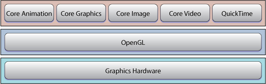

Getting Started with Graphics & ImagingTechnology OverviewMac OS X has unsurpassed graphics and imaging technologies. The most challenging part of getting started is deciding which one to use first. Quartz 2D, part of the Core Graphics framework, is an advanced, two-dimensional drawing engine that is resolution- and device-independent. Its powerful features include transparency layers, path-based drawing, offscreen rendering, advanced color management, as well as PDF document creation, display, and parsing. Core Image, introduced in Mac OS X v10.4, lets you use built-in image processing filters to process still and video images. You can also use it to write your own filters. Core Video provides a modern video pipeline in Mac OS X v10.4. Among other things, it takes care of display synchronization issues for you and makes switching between uncompressed video frames and OpenGL or Core Image easy. Core Animation adds smooth motion and dynamic feedback to the user interface. OpenGL is a cross-platform, standards-based, 3D graphics library. OpenGL provides a broad set of rendering, texture mapping, special effects, and other powerful visualization functions. It underlies other Mac OS X graphics technologies, which means that your application can benefit from OpenGL even if you are not explicitly using it. QuickTime—Apple’s cross-platform multimedia technology—lets you combine audio, video, still images, and text in a single application. See Getting Started with QuickTime—it’s a pretty big technology so it gets its own page!
Mac OS X graphics and imaging technologies leverage the power of the graphics hardware whenever possible. They hide the details of low-level graphics processing by providing easy-to-use application programming interfaces.

Start HereBefore you begin writing code: Read Overview of Quartz 2D for an introduction to the Quartz 2D imaging model and drawing API. Next read A Tour of Quartz Composer in Quartz Composer Programming Guide and complete the tutorial in Creating a Composition With Quartz Composer that’s in the same guide. Quartz Composer is a development tool provided with Mac OS X v10.4 for processing and rendering graphical data. Its visual programming environment lets you explore the graphics technologies available in Mac OS X without needing to write any code.
Choose a Learning PathIf you want to support drawing in your application, you need to understand how to use Quartz 2D. If you want to process still images, you need to understand Core Image. If you want to manipulate individual video frames, you need to understand Core Video. If you’re looking for peak performance in an existing 2D or 3D application, you may want to learn about OpenGL. Learning to Draw with Quartz 2DYou can use Quartz 2D calls from all Mac OS X application environments outside of the kernel. To get started: Read Quartz 2D Programming Guide to learn how to use the Quartz 2D API to accomplish just about any drawing Quartz is capable of performing. Refer to Quartz 2D Reference Collection Quartz 2D Reference Collection as necessary to learn more about Quartz opaque types and their associated functions and constants.
If you’re writing a Cocoa application, you can use Quartz 2D directly or you can use Cocoa drawing classes. Read Cocoa Drawing Guide to learn about the drawing classes, how to draw inside a Cocoa view, and how to instantiate and draw images defined in graphics files. To learn how to display a single image in a frame, read Image Views.
Processing Still and Video ImagesCore Image lets you harness the power of the graphics processor for image processing without you needing to know anything about OpenGL—even if you want to write your own image processing filters. To get started: If you want to process individual video frames or manipulate them in any way: AnimatingTo get started: Using OpenGL in the Mac OS X EnvironmentIf you want to use OpenGL for 3D graphics programming in the Mac OS X environment, you need to understand the platform-specific APIs for managing pixel formats, drawing contexts, displays, and windows. To get started: If you’re completely new to OpenGL programming, you first need to understand the fundamental concepts and techniques covered in OpenGL Programming Guide, by Dave Shreiner and others (Addison-Wesley). If you’ve used OpenGL on another platform, read OpenGL Programming Guide for Mac OS X, which describes how to get started on the Mac OS using the C programming language and also includes a tutorial on using OpenGL in Cocoa
Next StepsThe Graphics & Imaging Reference Library includes the following high-level resource pages, which can be bookmarked for easy access: Guides Conceptual and how-to information for graphics and imaging technologies. Reference Focused, detailed descriptions in reference format for graphics- and imaging-related APIs. Release Notes Late-breaking news and highlights of new or changed features in the latest release. Sample Code Sample programming projects that demonstrate how to use graphics routines. If you install the Xcode Tools CD, additional sample code is available in /Developer/Examples/. Technical Notes Late-breaking documents on timely technology issues. Technical Q&As Programming tips, code snippets, & FAQs by Apple’s support engineers. Mailing Lists Join the quartz-devquartzcomposer-devmac-opengl
|